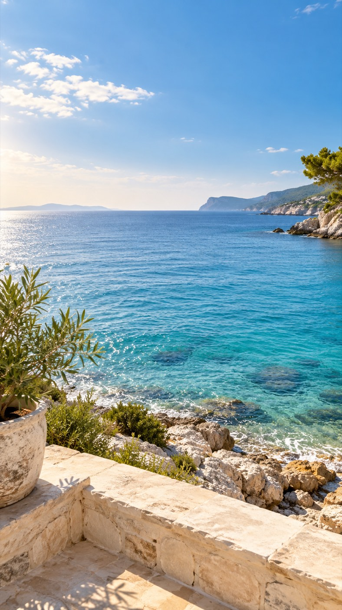
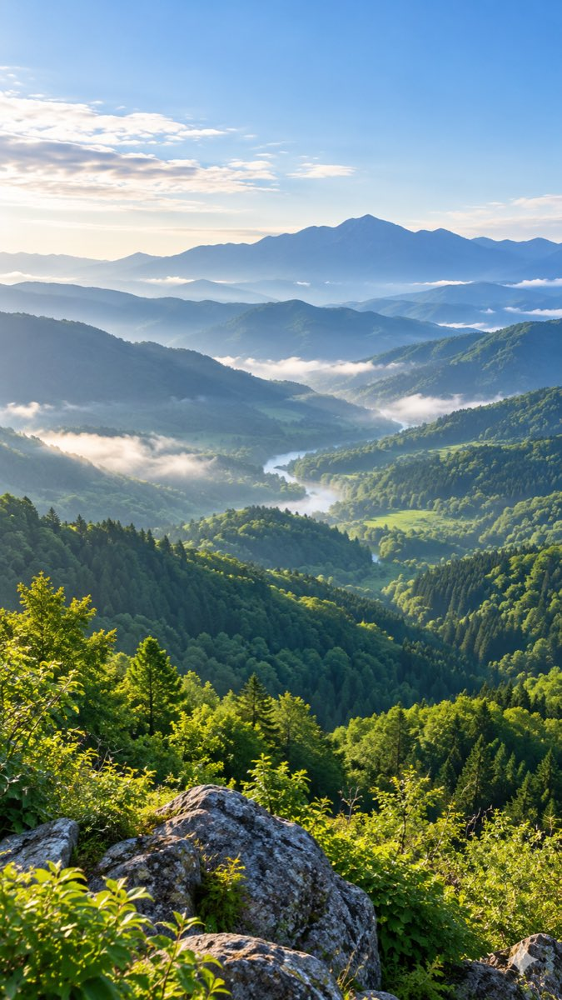

背景が大切な理由
理想の未来を
演出するため。


「こんな場所で、こんな時間を過ごしたい」を映像で伝える。
背景が大切な、もう1つの理由
綺麗な映像は、見ていたくなる。
大自然。旅先。
上質なホテル。
上質なホテル。
背景にも見どころがあると、
映像を楽しみながら話を聞ける。
見飽きにくい映像にして、
最後まで見てもらうことを狙う。

いつ撮るか
僕が素材を撮っている、3つの機会。

日常にある撮影のチャンスを、活かしていきましょう。
僕が実際にやってみたこと
広島オフ会でも、空き時間に素材撮影。
ちょっと空いた時間に、
みんなで撮ってみた。
みんなで撮ってみた。
オフ会の空き時間↓みんなで素材撮影↓参加したみんなからも好評
街並みのイメージ。広島当日の写真ではありません。
集めたい素材 2
2 綺麗な背景。
フォロワーが「こんな場所に行きたい」と感じる素材に。
1 背景が大切な理由
まとめ
背景で伝えるのは、
理想の未来。
理想の未来。
こんな暮らしをしてみたい。
この人の発信を、また見たい。
綺麗な映像で、
見続けてもらうことも狙う。
3 撮り方と次の行動
まとめ
見た人に、
どう感じてほしいか。
どう感じてほしいか。
目的を決めて、カメラを回す。
固定して撮るゆっくり回して撮る
撮った映像を見て、
次の投稿で使う素材を残しましょう。

集めた素材の保存
どんな話に使えるかを、ひと言残す。
素材を見返したときに、使う場面が浮かぶ名前に。
撮った日と場所も一緒に残しておくと、あとで探しやすくなります。
知ったことを、自分の投稿で使うために
撮る時の「これでいい？」を、現地で。
この背景、
自分の発信に合っている？
この素材、
どんな話に使える？
金沢の街を歩きながら、
一緒に考えて、撮ってみましょう。
街並みは教材イメージです。撮影予定地ではありません。
撮影同行で、一緒に取り組むこと
持ち帰るのは、次の投稿に使う背景素材。
街並みは教材イメージです。撮影予定地ではありません。
1
使えそうな背景を見つける街並みや、その場所らしい空間から。
2
どんな語りに合うか考える素材を見ながら、その場で話せる。
3
自分の投稿用に持ち帰る次のアフレコリールで使う素材に。
その場で考えた選び方を、
次の外出でも試していきましょう。
今回限定無料・撮影同行のご案内
SNSコンサル受講生向けアフレコリールの
アフレコリールの
背景素材を、
金沢で集めよう。
11/15日曜日
午前・オフ会前
午前・オフ会前
参加費 今回限定無料
集合時刻・場所・申込方法は
確定後にご案内します。
確定後にご案内します。
現地で、一緒に試したい方へ
次の投稿に使う素材を、
金沢で一緒に。
作りたいアフレコのテーマを
1つ、考えてきてください。
背景素材を集めるところから、
一緒に実践しましょう。
SNSコンサル受講生向け・オフ会前
募集の詳細は、確定後にご案内します。
募集の詳細は、確定後にご案内します。